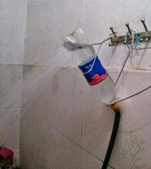

chuveiro garrafão
Este chuveiro é conhecido por sua capacidade de armazenar água quente, permitindo um banho mais prolongado sem a necessidade de reiniciar o aquecimento. 8.0/10
Voltar ao rankingQuarto lugar do ranking

Este chuveiro é conhecido por sua capacidade de armazenar água quente, permitindo um banho mais prolongado sem a necessidade de reiniciar o aquecimento. 8.0/10
Voltar ao ranking